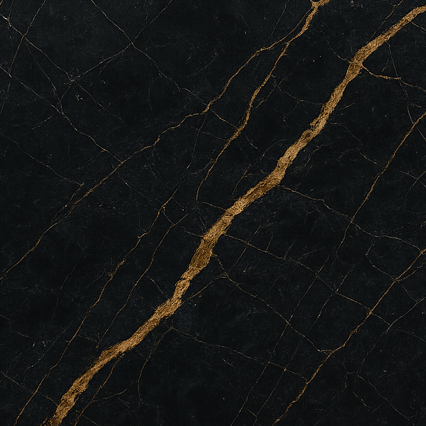

Prompt → procedural node graph → export-ready Blender material
Generate export-ready procedural materials from natural language and reference images.
Prompt → procedural node graph → export-ready Blender material
Material Apprentice is an AI system for generating procedural Blender materials from natural language prompts.
The system synthesizes editable node graphs, exposes artist-friendly controls, and exports reusable procedural assets directly inside Blender.
Users can generate complex materials such as rocks, metals, fabrics, food surfaces, and sci-fi materials using simple text prompts and optional reference images.
Generates clean and editable Blender shader node trees instead of baked textures.
Automatically creates reusable node groups with intuitive exposed parameters.
Outputs reusable Blender assets that can be shared across projects.


